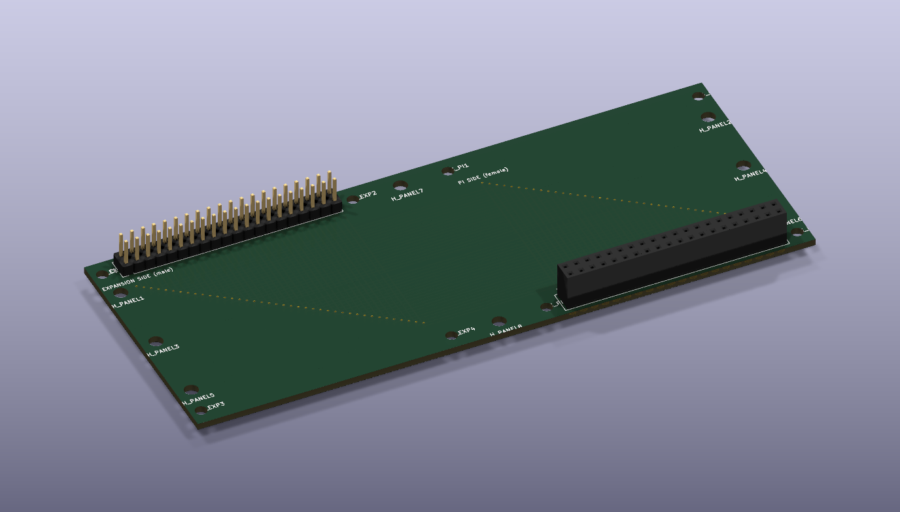
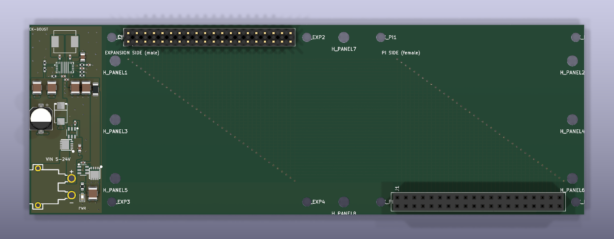

Flat Raspberry Pi expansion board
A thin carrier board that unfolds a Raspberry Pi 4 and its HAT stack so they sit side by side instead of on top of each other. Built for slimmer OpenManet radios.
Download the design
What it does
The Pi, battery board and transmitter board are too tall stacked up. This board folds the stack open.
Fold the stack open
Picture the Pi 4 stack hinged open along its short edge, opposite the USB and network ports. The Pi lies on one half of the board and the battery and transmitter boards on the other, all at the same height.
Pi mounts upside down
The Pi plugs chip side down into the female socket (J1). The battery board plugs onto the male header (J2) as usual, and the transmitter still stacks on the battery board.
Every GPIO pin passed through
All 40 pins are wired straight through, pin 1 to pin 1, on the two inner copper layers. The top and bottom stay bare apart from the connector pads.
Screw it down first
The standard HAT hole pattern on both halves holds the Pi and the expansion boards, and 8 extra M3 holes let you screw the board onto a plastic panel before fitting anything.
Photos
Photos of the real board will go here.
 Photo coming
Photo comingimg/photos/board.jpg Photo coming
Photo comingimg/photos/board-headers.jpg Photo coming
Photo comingimg/photos/board-pi.jpg Photo coming
Photo comingimg/photos/board-case.jpgTwo versions
Same holes, same connectors, same pin wiring. The second adds its own power supply.
GPIO only
143 × 56.5 mm, 4 layers. Two parts: a 2×20 female socket and a 2×20 male header. Easy to solder by hand.

With 5–24 V power supply
165 × 56.5 mm, 4 layers. Adds a 22 mm strip with an XT30 input and a buck-boost regulator that turns 5–24 V into 5.2 V for the Pi (up to 5 A limit, about 3 A continuous), with reverse-polarity and surge protection and a power LED. Its wide 5 V and ground areas also carry Pi 4 current properly.
| Part | Details |
|---|---|
| J1, Pi side | 2×20 female socket, 2.54 mm, through-hole. Pad layout mirrored for the upside-down Pi. |
| J2, expansion side | 2×20 male header, 2.54 mm, through-hole, standard layout. |
| Mounting | Two full Raspberry Pi HAT patterns (58 × 49 mm, M2.5) labelled H_PI1–4 and H_EXP1–4, plus 8 M3 panel holes H_PANEL1–8. Every hole is labelled on the silkscreen. |
| Checks | Design rule check passes with 0 errors on both versions. The hole-to-header offset was checked against two official Raspberry Pi sources. |
Download
Open hardware. Made in KiCad 10, generated by script so every position is exact and reproducible.
| File | What's in it |
|---|---|
| GPIO only: Gerbers (53 KB) | Upload this as-is to a PCB maker such as JLCPCB. Choose 4 layers and 1.6 mm. |
| GPIO only: full design (118 KB) | KiCad board and project, the build script, design notes and full spec, design-rule report, BOM, placement file and an ordering guide. |
| Power version: Gerbers (93 KB) | Upload as-is. Choose 4 layers, and 1 oz inner copper if it's cheap (less voltage drop). |
| Power version: full design (473 KB) | KiCad board, project and rules, footprints and 3D models, the build script, design notes PDF, BOM with LCSC part numbers, placement file and an ordering guide. |
Before you order
Check the pinout
A wrong pin could damage a Pi. Open the board in KiCad and compare J1 and J2 against a Pi 4 pinout and your own boards before paying for anything.
Power on the GPIO-only board
On the GPIO-only version, 5 V and ground run on thin 0.25 mm inner tracks. They are fine for signals but too thin to feed a Pi 4 from the battery board for long. Use the power version if power flows through the board.
Power version notes
Check the XT30 polarity against your lead first. Don't plug in the Pi's USB-C at the same time. If the battery board also drives 5 V, read its notes in the download before fitting both. The regulator tuning is calculated but not yet bench-tested.
Assembly
The GPIO-only board has just two through-hole parts, so ordering the bare board and soldering 80 pins yourself is often simplest. The ordering guides in each download explain the JLCPCB steps.